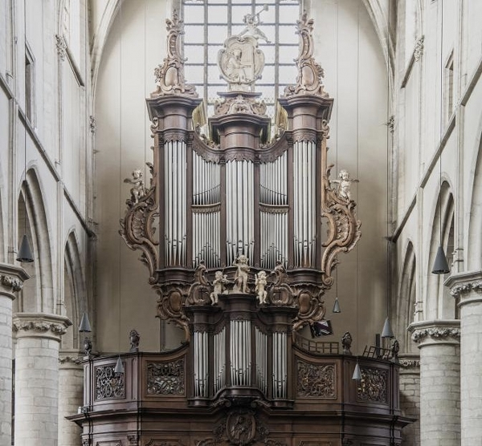

Muziek speelt een centrale rol in mijn leven. Ik speel al even orgel en piano, en elke keer dat ik de toetsen aanraak, voel ik de kracht van de muziek door me heen stromen. Een van mijn favoriete plekken is de Sint-Waldetrudiskerk in Herentals, waar ik het imposante orgel bespeel. Dit prachtige instrument, te zien op de afbeelding hieronder, biedt een overweldigende klankbeleving en geeft me de ruimte om mijn muzikaliteit volledig tot uiting te laten komen. Naast het bespelen van muziek ben ik ook geïnteresseerd in het schrijven en analyseren van partituren. Het componeren en begrijpen van muziek op een dieper niveau zorgt ervoor dat ik continu mijn technische en creatieve vaardigheden kan ontwikkelen.
Piano is een ander instrument waarin ik mijn liefde voor muziek kan kwijtkan. Hoewel de klanken subtieler zijn dan die van het orgel, geeft de piano me de mogelijkheid om intieme stukken te spelen en mijn emotionele kant te verkennen. Samen met het orgel vullen deze instrumenten mijn leven met een muzikaal spectrum dat ik met veel passie verken en ontwikkel.
Naast muziek ben ik ook een fervent gamer. Gamen biedt me de mogelijkheid om in andere werelden te duiken en avonturen te beleven zonder de beperkingen van de realiteit. Van complexe RPG’s tot fantasierijke open werelden, gamen stelt me in staat om mijn liefde voor verhalen en worldbuilding verder te ontwikkelen. Ik raak geïnspireerd door de manier waarop game-ontwikkelaars complete universums vormgeven, en dit sluit ook aan bij mijn interesse in het maken van mijn eigen verhalen.
Ook ben ik dol op Dungeons & Dragons (D&D), een rollenspel waarbij ik samen met vrienden volledig eigen werelden en personages creëer. Hier kan ik niet alleen mijn verbeelding de vrije loop laten, maar ook strategisch nadenken, wat elke sessie weer spannend en vernieuwend maakt. D&D combineert storytelling, tactiek, en sociale interactie, elementen die voor mij zorgen voor eindeloze fascinatie en creativiteit.
Mijn interesses reiken verder dan fictieve werelden; ik ben gefascineerd door culturele elementen uit de echte wereld. De werken van Tolkien zijn voor mij bijvoorbeeld een grote inspiratiebron, vanwege zijn gedetailleerde wereldopbouw en zijn uitgebreide kennis van mythologie en taal. Tolkien’s wereld inspireert me niet alleen tijdens het lezen, maar ook in mijn eigen projecten, zoals bij het creëren van personages en wereldbepalingen voor D&D of cosplay.
Daarnaast verdiep ik me graag in geografie, vlagenkunde (vexillologie), en strijdtuigen uit verschillende culturen en tijdperken. Ik vind het fascinerend hoe geografische kenmerken een cultuur kunnen beïnvloeden, en hoe symboliek en geschiedenis samenkomen in vlaggen en wapens. Door dit soort onderwerpen te bestuderen, krijg ik een diepgaander begrip van de diversiteit en creativiteit die in de menselijke geschiedenis besloten ligt.
Ook ben ik gefascineerd door muziekinstrumenten van over de hele wereld en uit verschillende tijdperken. Van de klassieke luiten en fluiten uit de middeleeuwen tot traditionele instrumenten zoals de Japanse shakuhachi of de West-Afrikaanse djembé – elk instrument vertelt zijn eigen verhaal en biedt een unieke blik op de cultuur waar het vandaan komt. Deze interesse voedt mijn eigen passie voor muziek en opent mijn ogen voor de veelzijdigheid van muzikale expressie wereldwijd.
Om het overzichtelijk te maken, vind je hieronder een lijst van mijn belangrijkste hobby’s en interesses:
Met mijn brede interesse in zowel fictie als geschiedenis kan ik me volledig verliezen in verhalen, klanken en de diepte van culturele expressies. Deze passies inspireren me niet alleen, maar bieden me ook een bron van voortdurende groei en ontdekking.
